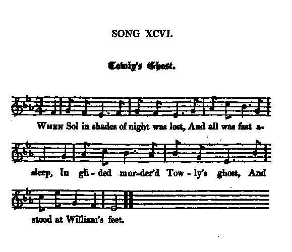
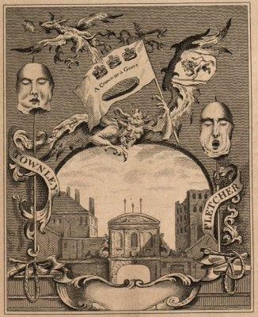
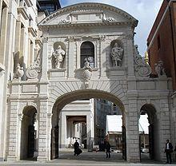

Towly's Ghost
Le fantôme de Francis Townley
Cumberland's exactions
Tune - Mélodie"Chevy Chase (1st Tune)"
from Hogg's "Jacobite Relics" 2nd Series N°96 page 187, 1821
Sequenced by Christian Souchon
|
To the tune:
The tune printed to this song by Hogg is one of those referred to as "Chevy Chase". It is also to be found in Bruce & Stokoe's "Northumbrian Minstrelsy", 1882, pg. 145. A different tune appears in D'Urfey's (1653-1723) "Pills to Purge Melancholy" . It accompanies the song "God prosper..." . The present variant is regarded as "the 'gathering tune' of the ancient and noble house of Perry, and is played by the Duke of Northumberland's piper on all public and festive occasions. Tradition is certainly in its favour as the correct Chevy Chase melody and an original small-pipe tune" (Bruce & Stokoe). Historically, Chevy Chase refers to the Battle of Otterburn (1388), the scene of a Border affray between Percy, Lord of Newcastle and the Border chieftain Douglas, in which Percy was defeated. The battle is also called the Chase of the Cheviot, because the plunder raid on England which Douglas jokingly described as a hunt (or chase) involved crossing the Cheviot Hills in northern England, hence the title. Source "The Fiddler's Companion" (cf. Liens). |
 |
A propos de la mélodie:
Le timbre imprimé par Hogg pour ce chant est l'une des mélodies connues sous le nom de "Chevy Chase". Elle figure aussi dans le recueil de Bruce & Stockoe, "Mélodies de Northumberland", 1882, p.145. une différente mélodie est donnée par d'Urfey (1653-1723) dans ses "Pilules contre la mélancolie". Elle accompagne le chant "God prosper..." . La présente variante est considérée "comme l'air de rassemblement de l'ancienne et noble famille Perry et elle est jouée par le sonneur du Duc de Northumberland dans toutes les grandes occasions. La tradition fait d'elle la "vraie" mélodie de Chevy Chase et celle que l'on joue sur la petite cornemuse." (Bruce & Stockoe). Historiquement, Chevy Chase est le nom donné à la bataille d'Otterburn (1385), qui vit s'affronter, dans le Border, Percy, seigneur de Newcastle et le chef Douglas. Le premier fut vaincu. La bataille est aussi appelée la "Chasse aux Monts Cheviot", parce que Douglas appelait ainsi, par plaisanterie, son incursion en Angleterre qui le conduisait au-delà desdits monts. Source "The Fiddler's Companion" (cf. Liens). |
|
To the lyrics:
"I Copied this song from the honourable Miss Rollo's papers ; and though I got several other copies, yet the name in them all was Towly. I, however, find no such name among those who followed prince Charles. There was a colonel Francis Townly, who led the 200 men that joined the Highland army at Manchester, and who was after taken at the surrender of Carlisle, and executed with the rest. " Hogg in "Jacobite Relics", volume 2. As Hogg remarks in connection with the song "A wicked old Peer": "It has been a constant amusement with our Jacobite song-makers to send the most obnoxious of their opponents to hell, and give some account of their treatment there, as abundantly appears in the course of this work." See (among others): A wicked old Peer , The Devil over Stirling , Burnet , Geordie sits in Charlie's Chair (2nd song), Crookieden (1st song), |
A propos du texte:
"J'ai trouvé ce chant sur des feuillets communiqués par l'honorable Miss Rollo; et bien que j'en aie reçu plusieurs copies, le nom qui figure sur toutes est "Towly". Pourtant il ne figure pas sur les listes de partisans du prince Charles. Il y eut un colonel Francis Townly à la tête de 200 hommes qui se joignirent à l'armée des Highlands à Manchester et furent arrêtés lors de la reddition de Carlisle et exécutés avec les autres." Hogg in "Jacobite Relics", volume 2. Comme le fait remarquer Hogg à propos du chant "A wicked old Peer": "Les faiseurs de chants Jacobites ont pris un malin plaisir à envoyer en enfer leurs principaux adversaires et à décritre le traitement qu'ils y subissaient. On en verra de nombreux exemples dans cet ouvrage". Cf. (entre autres): Un méchant vieux noble , Le diable à Stirling , Burnet , Geordie sur le siège de Charlie (2ème chant), Crookieden (1er chant). |

|
TOWLY'S GHOST
1. When Sol in shades of night was lost, And all was fast asleep, In glided murder'd Towly's ghost, [2] And stood at William's feet. [1] 2. " Awake, infernal wretch!" he cried, " And view this mangled shade, [4] " That in thy perjur'd faith relied, " And basely was betray'd. [3] 3. " Imbrued in bliss, imbath'd in ease, " Though now thou seem'st to lie, " My injur'd form shall gall thy peace, " And make thee wish to die. 4. " Fancy no more in pleasant dreams " Shall frisk before thy sight, " But horrid thoughts and dismal screams " Attend thee all the night. 5. " Think on the hellish acts thou'st done, " The thousands thou'st betray'd: " Nero himself would blush to own " The slaughter thou hast made. 6. " Nor infants' cries nor parents' tears " Could stay thy bloody hand, " Nor could the ravish'd virgin's fears " Appease thy dire command. 7. " But, ah! what pangs are set apart " In hell thou'lt quickly see, " Where ev'n the damn'd themselves shall start " To view a fiend like thee." 8. In heart affrighted, Willie rose, And trembling stood and pale; Then to his cruel sire he goes, And tells the dreadful tale. 9. " Cheer up, my dear, my darling son," The bold usurper said, " And ne'er repent of what thou'st done, " Nor be at all afraid. 10. " If we in Scotland's throne can dwell, " And reign securely here, " Your uncle Satan's king in hell, " And he'll secure us there." Source: "The Jacobite Relics of Scotland, being the Songs, Airs and Legends of the Adherents to the House of Stuart" collected by James Hogg, volume II published in Edinburgh by William Blackwood in 1821. |
 Which misled traytors did so proudly wave; The devil seems the project to surprise; A fiend confused from off the trophy flies. While trembling rebels at the fabric gaze, And dread their fate with horror and amaze, Let Britain's sons the emblematic view, And plainly see what is rebellion's due." |
LE FANTOME DE TOWNLEY
1. Dans les ténèbres disparaissent Toutes choses. Tout dort. Au chevet de William se dresse [1] L'ombre de Townley mort. [2] 2. "Debout et vois, funeste engeance! Le spectre mutilé, [4] Dont tu trahis hier la confiance, Toi qui t'es parjuré. [3] 3. Bien que dans le bonheur tu nages, Mon ombre infirme vient T'infliger des maux que soulage La mort, y mettant fin. 4. Les voix de sirènes des rêves Bientôt se seront tues. D'horribles images sans trêve Obsèderont ta vue: 5. Pense à tes actes diaboliques, A ces milliers de gens Que tu fis immoler. L'antique Néron n'en fit autant. 6. Ni cris d'enfants, ni pleurs de mères N'ont pu t'apitoyer, Pas plus que les larmes amères Des filles qu'on violait. 7. Tu verras bientôt quelles peines L'enfer t'a réservées. Te voyant, démon, la géhenne Restera médusée." 8. Terrorisé, Willie, se lève, Livide et mort de peur, Il court trouver son cruel père, Lui conte ses malheurs. 9. "Courage mon fils préféré", Lui dit l'usurpateur "On ne doit jamais regretter, Ni céder à la peur. 10. Car sur l'Ecosse règne, éphèbe, Ton père, sois confiant; Ton oncle Satan, sur l'Erèbe. Son trône nous attend." (Trad. Christian Souchon(c)2010) |
|
[1]
William
: William Augustus, Duke of Cumberland (1721-1765), third son of King George II and the hero of Culloden (16 April 1746). He was the instigator of the ensuing slaughter that brought him the nickname "Butcher" Cumberland. (cf.
Note to "Culloden's Harvest".
[2] Colonel Francis Townley , was the last but one victim to barbarous justice whose head was exposed atop the gateway Arch of Temple Bar (then westernmost end of London). Fletcher , his fellow-officer, the seventh and last. Townley was the nephew of another Jacobite who had been tried and acquitted in 1725. He had gone over to France in 1727, and served for fifteen years in the French army, being at the siege of Philipsburg. About 1740 he came back to England. When the Highland army came into England, he met them between Lancaster and Preston, and came with them to Manchester. He was commissioned to raise a regiment, which he soon completed. During the retreat from Derby, he was at the head of the Manchester regiment . 400 men of this regiment were left to garrison Carlisle. [3] Basely betrayed : The troops of the Duke of Cumberland reached Carlisle on 21 December 1745 and immediately began to besiege and bombard the town. The garrison resisted for nine days but on 30 December, requested terms from Cumberland who replied - "The only conditions he could grant to rebels were that they should not be put to the sword, but be reserved for the king's pleasure" . The "Kings pleasure" involved Jacobite prisoners being crammed into a dungeon in Carlisle Castle without food, water or sanitation facilities until they were brought out for execution. The so called "licking-stones" where desperate prisoners licked the walls to obtain some moisture can still be seen today. [4] Mangled shade : The executions were staggered with some of the officers sent to London to be hung, drawn and quartered for High Treason on Kennington Common. Townley and Fletcher were among them, with seven other unfortunate Jacobites. As soon as they were dead the hangman cut down the bodies, disembowelled, beheaded, and quartered them, throwing the hearts into the fire. A monster, named Buckhorse did eat a piece of Townley's flesh, to "show his loyalty". The heads of Fletcher and Townley were "put on the Bar" (cf. pictures) on August 12, 1746 and Horace Walpole, the son of Robert Walpole , wrote to a friend, he had just "passed under the new heads on Temple Bar, where people make a trade of letting spy-glasses at a halfpenny a look." Twenty years later a mysterious man was arrested by the watch as he was discharging, by the dim light, musket bullets at the two heads then remaining upon Temple Bar. |
 Temple Bar was the barrier marking the westernmost extent of the City of London on the road to Westminster. Though the earlier wooden archway escaped damage by the Great Fire, it was replaced in 1672 by a fine stone arch designed by Christopher Wren. During the 18th century heads of traitors mounted on pikes were exhibited on the roof. It was dismantled piece by piece and the stones were stored in 1878. A brewer Sir Henry Meux bought the stones and re-erected the arch as a gateway at his own house, Theobald's Park in Hertfordshire, in 1880. It remained there in a clearing in a wood until 2003, when it was purchased by the Temple Bar Trust (for £1, as it was in a very dilapidated state), carefully dismantled and re-erected as an entrance to the Pasternoster Square, north of St Paul's Cathedral. It was opened to the public on 10 November 2004. |
[1]
William
: Guillaume Auguste, duc de Cumberland (1721 - 1765), 3ème fils du roi Georges II et héros de Culloden (16 avril 1746). Il fut l'instigateur des atrocités qui suivirent sa victoire et fut dès lors surnommé, "Cumberland le Boucher". (cf.
Note relative à "Culloden's Harvest".
[2] Le colonel Francis Townley et son second, Fletcher , furent les dernières victimes d'une coutume barbare: leurs têtes furent exposées au sommet de la porte de Temple Bar (jadis située à l'extrémité ouest de Londres). Townley était le neveu d'un autre Jacobite qui avait été jugé et acquitté en 1725. Il était allé en France en 1727 et avait servi 15 ans durant dans l'armée française. C'est ainsi qu'il avait pris part au siège de Philipsbourg. Vers 1740 il rentra en Angleterre. Lorsque l'armée de Highlands y pénétra, il se porta à sa rencontre entre Lancastre et Preston et l'accompagna jusqu'à Manchester. Il fut chargé de constituer le Régiment de Manchester dont il prit la tête pendant la retraite de Derby. 400 hommes furent laissés en garnison à Carlisle. [3] Confiance trahie : Les troupes du Duc de Cumberland atteignirent Carlisle le 21 décembre 1745 et en entreprirent aussitôt d'assiéger et de bombarder la ville. La garnison résista pendant 9 jours, mais le 30 décembre, elle demanda à parlementer. Cumberland répondit: "Les seules conditions que je puisse accorder à des rebelles, c'est de ne pas être passés au fil de l'épée, mais reservés au bon plaisir du roi. " Le "bon plaisir du roi" fut d'entasser les prisonniers dans un cachot du château, sans eau, nourriture, ni lieu d'aisance, jusqu'à ce qu'on les en sorte pour leur exécution. Les "pierres léchées" que l'on montre encore aujourd'hui sur les murailles l'avaient été par des prisonniers tentent de se nourrir de la moisissure. [4] Ombre mutilée : ces exécutions alternaient avec celles des officiers envoyés à Londres pour y être pendus puis écartelés pour haute trahison à la prison commune de Kennington. Townley et Fletcher en faisaient partie avec sept autres Jacobites. Aussitôt après l'exécution, le bourreau découpa les corps, les éviscéra, les décapita, les écartela et jeta les cœurs au feu. Un forcené, du nom de Buckhorse dévora un morceau de chair de Townley, "comme preuve de sa loyauté". Les têtes de Fletcher et de Townley furent "fixées sur Temple Bar" (cf. illustrations), le 12 août 1746 et Horace Walpole, le fils de Robert Walpole , écrivit à un ami qu'"il venait juste de passer sous les nouvelles têtes de Temple Bar, où les gens louaient des longues-vues au tarif d'un demi-penny le coup d'œil." Vingt ans plus tard la garde arrêta un personnage mystérieux qui tirait dans la pénombre avec un mousquet sur les deux têtes restées en place. |
|
|
||